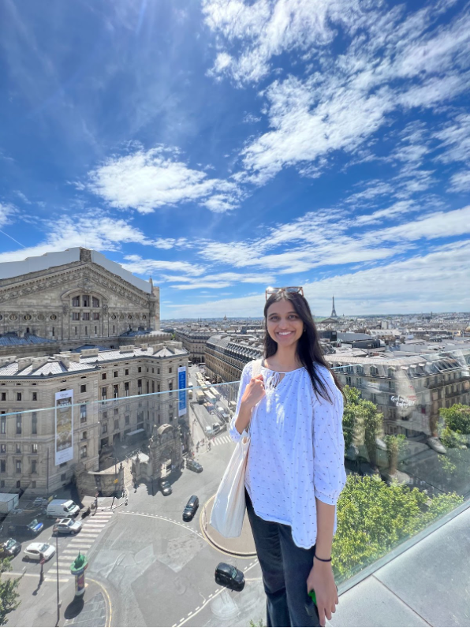
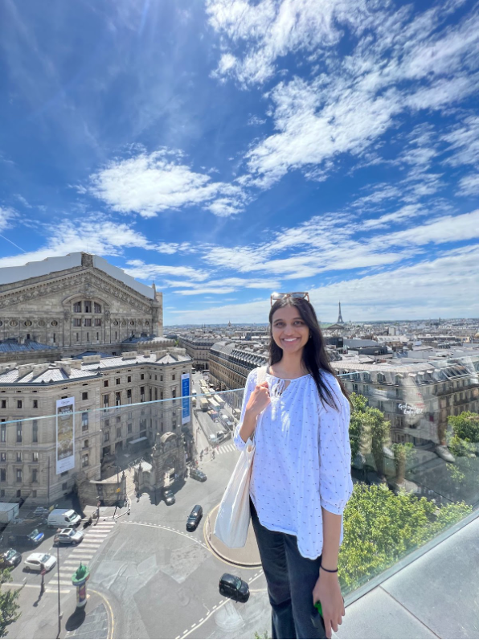

We aim to promote integenerational connections between students and seniors by implementing brain exercise techniques for improving the cognitive function of seniors and delaying the progression of Alzheimier’s Disease.

Hello, my name is Ingrid and I am a junior majoring in Neuroscience, with a minor in Bioethics. From a young age, I have been fascinated with how our individual experiences, stories, and memories define who we are and the world around us. This fueled my passion for neuroscience with a particular interest in neurodegenerative diseases and how preventive matters can preserve our source of identity, keeping our defining experiences with us for a lifetime. I am thrilled to continue to pursue this interest through Brain Exercise Initiative! Outside of BEI, I volunteer in the Neurological and CardiovascularInstitute at Swedish Hospital, am part of the Presidential Scholar Program, and enjoy various activities such as swimming!

 

Hi there! I'm Lina, and I'm currently a senior pursuing a major in Neuroscience and minoring in American Sign Language. Along with researching at the Young Lab and volunteering at Seattle Children’s Hospital, I enjoy reading, baking, and doing ballet. Having personally witnessed the impact of Alzheimer’s disease on my grandmother, I was inspired to get involved with BEI. As one of the Co-Presidents, I hope to compassionately serve those in the Seattle community who are suffering from memory loss.


Hi everyone! My name is Rachel and I'm a senior majoring in Biology (Physiology) and minoring in Informatics. I've always been passionate about understanding how our brain functions, specifically how learning and memory are processed neurologically and learning about BEI's simple exercises and steady results was extremely fascinating to me. Outside of BEI, I'm a research assistant at the Zweifel Lab, where we focus on dopamine-related neural circuitry. In my free time, I enjoy playing classical Chinese instruments (the guzheng and the hu lu si), playing badminton, and trying out new baking recipes.


Hello everyone! My name is Jules and I am currently a senior studying General Biology. As someone that has always enjoyed learning about medical conditions and having meaningful interactions with others, BEI has provided me with an opportunity to make a real difference in the world. When I am not volunteering or studying, I enjoy learning new languages, making DIY art projects, and listening to music. I look forward to my time at BEI and am excited to continue contributing, alongside our volunteers, towards our program's goal of combating Alzheimer's!


Hey! My name is Saiyara Alam and I am a senior majoring in Biology (Cellular, Molecular, Developmental). I currently work with Dr. Sheehan to improve the teaching methods of TCD, as well as the Schindler Lab, alongside volunteering in local events whenever possible. In my free time, I love to read, dance, and try new foods! I am fascinated by the brain and how large of an impact it can make on our bodies and our lives, specifically the effects of Alzheimer's disease. So, when I heard about BEI and the exercises they offer, I had to be a part of it. As the Director of Outreach, I hope to spread the word to those in the Seattle community who are currently undergoing the effects of Alzheimer's.
Esin Gumustekin was inspired by Dr. Ryuta Kawashima's study in Japan that suggested doing simple math and
reading aloud for 30 mins a day, 5x a week, resulted in significant cognitive improvements for those
with Alzheimer's.
These activities stimulated the prefrontal cortex, where memory, cognition, and planning are controlled;
participants who completed the exercises saw and felt improbemnts in communication, cognition, and mood.